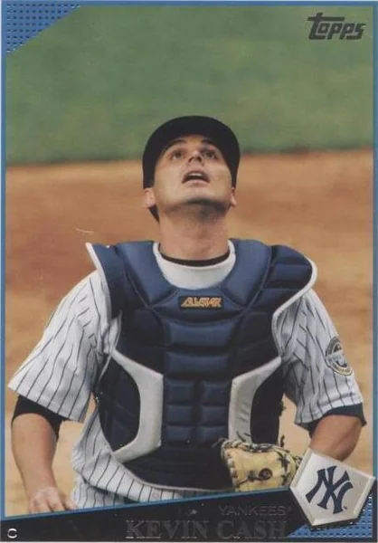
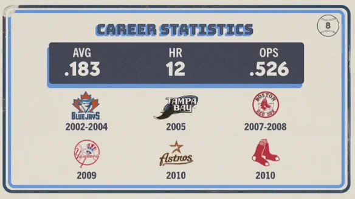

Kevin Forrest Cash
Career Highlights & Facts
(Facts are AI-generated and may require verification)
- Before becoming a decorated skipper, this individual spent a portion of his playing career wearing the pinstripes in the Bronx.
- He is one of the few individuals to transition from a career behind the plate to earning consecutive Manager of the Year honors.
- Though his time in New York was brief, he served as a defensive presence during a season that saw him contribute to the organization's depth.
Would you like to find out more about Kevin Forrest Cash?
Career Totals
| WAR | AB | H | HR | BA | R | RBI | SB | OBP | SLG | OPS | OPS+ |
|---|---|---|---|---|---|---|---|---|---|---|---|
| -3.1 | 641 | 117 | 12 | .183 | 51 | 58 | 0 | .248 | .278 | .526 | 37 |
Statistics via Baseball-Reference.com
The Original Clue
